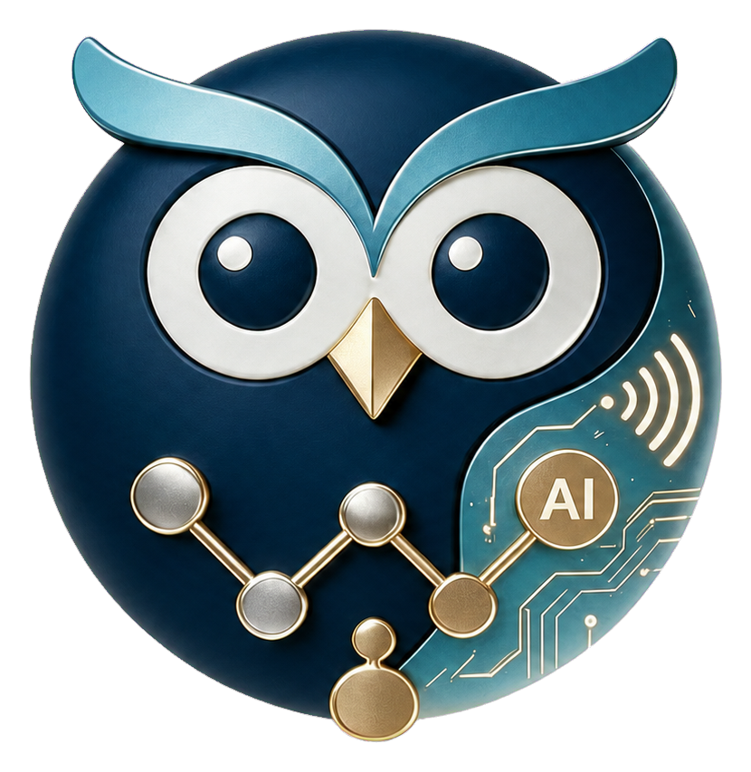

<!doctype html>
<html lang="zh-CN">
<head>
  <meta charset="utf-8" />
  <meta name="viewport" content="width=device-width, initial-scale=1" />
  <title>凯旋智聘</title>
  <link rel="stylesheet" href="style.css" />
  <style>
    /* Shell: 左侧导航 + 右侧内容区 */
    .shell { display: flex; height: 100vh; overflow: hidden; }
    /* 侧边栏 */
    .sidebar {
      width: 220px; min-width: 220px;
      background: var(--sidebar-bg, #f7f8fa);
      border-right: 1px solid var(--border, #e8e9ee);
      display: flex;
      flex-direction: column;
      color: var(--fg, #1c1d21);
      overflow: hidden;
    }
    .sidebar-header {
      padding: 16px 14px 12px;
      display: flex; align-items: center; gap: 10px;
      border-bottom: 1px solid var(--border, #e8e9ee);
    }
    .sidebar-logo {
      width: 30px; height: 30px;
      border-radius: 9px;
      display: block; object-fit: contain;
      box-shadow: 0 2px 6px rgba(91,91,214,0.35);
    }
    .sidebar-brand {
      display: inline-flex;
      align-items: baseline;
      flex-shrink: 0;
      white-space: nowrap;
      font-family: "PingFang SC", "Microsoft YaHei", "SF Pro Display", system-ui, sans-serif;
      font-size: 18px;
      font-weight: 750;
      line-height: 1;
      letter-spacing: -0.045em;
    }
    .sidebar-brand-primary,
    .sidebar-brand-accent { color: #111827; }
    @media (prefers-contrast: more) {
      .sidebar-brand-primary,
      .sidebar-brand-accent { color: #000; }
    }
    .sidebar-nav { flex: 1; padding: 8px 10px; overflow-y: auto; }
    .sidebar-nav::-webkit-scrollbar { width: 4px; }
    .sidebar-nav::-webkit-scrollbar-thumb { background: rgba(0,0,0,0.12); border-radius: 4px; }
    .nav-group { margin-bottom: 14px; }
    .nav-group-label {
      padding: 0 8px; margin-bottom: 4px;
      font-size: 10px; font-weight: 600; text-transform: uppercase;
      letter-spacing: 0.05em; color: var(--meta, #9ca3af);
    }
    .nav-item {
      display: flex; align-items: center; gap: 9px;
      padding: 8px 10px; border-radius: 8px;
      color: var(--fg-2, #3a3d44); font-size: 13px; font-weight: 500;
      cursor: pointer; transition: background 0.15s, color 0.15s;
      margin-bottom: 2px; text-decoration: none;
    }
    .nav-item:hover { background: rgba(0,0,0,0.04); }
    .nav-item.active { background: var(--accent-bg, #eeeefb); color: var(--accent, #5b5bd6); font-weight: 600; }
    .nav-item .icon { width: 16px; height: 16px; opacity: 0.75; flex-shrink: 0; }
    /* dev-only 元素默认隐藏（覆盖 .nav-item 的 display: flex，仅在开发者模式开启时显示） */
    .nav-item.dev-only { display: none; }
    .nav-item.dev-only.visible { display: flex; }
    /* 右侧内容区 */
    .content-area { flex: 1; position: relative; background: #fff; }
    iframe#content-frame {
      width: 100%; height: 100%; border: none; display: block;
    }
  </style>
</head>
<body>
  <div class="shell">
    <!-- 侧边栏 -->
    <aside class="sidebar">
      <div class="sidebar-header">
        
        <span class="sidebar-title sidebar-brand" aria-label="凯旋智聘">
          <span class="sidebar-brand-primary">凯旋</span><span class="sidebar-brand-accent">智聘</span>
        </span>
      </div>
      <nav class="sidebar-nav" id="sidebarNav">
        <!-- 三模块统一联动 -->
        <div class="nav-group">
          <div class="nav-group-label">智能联动</div>
          <div class="nav-item" data-src="screens/unified-workflow.html"><svg class="icon" viewBox="0 0 24 24" fill="none" stroke="currentColor" stroke-width="2"><path d="M4 6h6M14 6h6M8 3v6M4 18h6M14 18h6M16 15v6M12 6v12M9 12h6"/></svg>一键运行</div>
          <div class="nav-item" data-src="screens/reply-config.html"><svg class="icon" viewBox="0 0 24 24" fill="none" stroke="currentColor" stroke-width="2"><path d="M21 15a2 2 0 0 1-2 2H7l-4 4V5a2 2 0 0 1 2-2h14a2 2 0 0 1 2 2z"/></svg>大模型判断配置</div>
        </div>
        <!-- 自动化分组（打招呼 + 自动回复合并） -->
        <div class="nav-group">
          <div class="nav-group-label">自动化</div>
          <div class="nav-item" data-src="screens/config-home.html"><svg class="icon" viewBox="0 0 24 24" fill="none" stroke="currentColor" stroke-width="2"><path d="M16 21v-2a4 4 0 0 0-4-4H5a4 4 0 0 0-4 4v2"/><circle cx="8.5" cy="7" r="4"/><line x1="20" y1="8" x2="20" y2="14"/><line x1="23" y1="11" x2="17" y2="11"/></svg>岗位配置</div>
          <div class="nav-item" data-src="screens/merged-interval.html"><svg class="icon" viewBox="0 0 24 24" fill="none" stroke="currentColor" stroke-width="2"><path d="M11.99 2C6.47 2 2 6.48 2 12s4.47 10 9.99 10C17.52 22 22 17.52 22 12S17.52 2 11.99 2zM12 20c-4.42 0-8-3.58-8-8s3.58-8 8-8 8 3.58 8 8-3.58 8-8 8z"/><path d="M12.5 7H11v6l5.25 3.15.75-1.23-4.5-2.67z"/></svg>拟人频率</div>
          <div class="nav-item" data-src="screens/merged-scheduled-tasks.html"><svg class="icon" viewBox="0 0 24 24" fill="none" stroke="currentColor" stroke-width="2"><path d="M19 3h-1V1h-2v2H8V1H6v2H5c-1.11 0-1.99.9-1.99 2L3 19c0 1.1.89 2 2 2h14c1.1 0 2-.9 2-2V5c0-1.1-.9-2-2-2zm0 16H5V8h14v11zM7 10h5v5H7z"/></svg>定时任务</div>
          <div class="nav-item" data-src="screens/merged-records.html"><svg class="icon" viewBox="0 0 24 24" fill="none" stroke="currentColor" stroke-width="2"><path d="M13 3c-4.97 0-9 4.03-9 9H1l3.89 3.89.07.14L9 12H6c0-3.87 3.13-7 7-7s7 3.13 7 7-3.13 7-7 7c-1.93 0-3.68-.79-4.94-2.06l-1.42 1.42C8.27 19.99 10.51 21 13 21c4.97 0 9-4.03 9-9s-4.03-9-9-9zm-1 5v5l4.28 2.54.72-1.21-3.5-2.08V8H12z"/></svg>运行记录</div>
          <div class="nav-item dev-only" data-src="screens/greeting-debug.html"><svg class="icon" viewBox="0 0 24 24" fill="none" stroke="currentColor" stroke-width="2"><path d="M12 20h9"/><path d="M16.5 3.5a2.121 2.121 0 0 1 3 3L7 19l-4 1 1-4L16.5 3.5z"/></svg>打招呼调试</div>
          <div class="nav-item dev-only" data-src="screens/reply-debug.html"><svg class="icon" viewBox="0 0 24 24" fill="none" stroke="currentColor" stroke-width="2"><path d="M12 20h9"/><path d="M16.5 3.5a2.121 2.121 0 0 1 3 3L7 19l-4 1 1-4L16.5 3.5z"/></svg>回复调试</div>
        </div>
        <!-- 简历筛选分组 -->
        <div class="nav-group">
          <div class="nav-group-label">简历筛选</div>
          <div class="nav-item" data-src="screens/outbound-config.html"><svg class="icon" viewBox="0 0 24 24" fill="none" stroke="currentColor" stroke-width="2"><path d="M22 16.92v3a2 2 0 0 1-2.18 2 19.79 19.79 0 0 1-8.63-3.07 19.5 19.5 0 0 1-6-6A19.79 19.79 0 0 1 2.12 4.18 2 2 0 0 1 4.11 2h3a2 2 0 0 1 2 1.72c.12.9.33 1.78.62 2.63a2 2 0 0 1-.45 2.11L8 9.73a16 16 0 0 0 6 6l1.27-1.27a2 2 0 0 1 2.11-.45c.85.29 1.73.5 2.63.62A2 2 0 0 1 22 16.92z"/></svg>外呼配置</div>
          <div class="nav-item" data-src="screens/resume-reply-config.html"><svg class="icon" viewBox="0 0 24 24" fill="none" stroke="currentColor" stroke-width="2"><path d="M21 15a2 2 0 0 1-2 2H8l-5 4V5a2 2 0 0 1 2-2h14a2 2 0 0 1 2 2z"/><path d="M8 8h8M8 12h6"/></svg>简历回复配置</div>
          <div class="nav-item" data-src="screens/talent-pool.html"><svg class="icon" viewBox="0 0 24 24" fill="none" stroke="currentColor" stroke-width="2"><path d="M17 21v-2a4 4 0 0 0-4-4H5a4 4 0 0 0-4 4v2"/><circle cx="9" cy="7" r="4"/><path d="M23 21v-2a4 4 0 0 0-3-3.87"/><path d="M16 3.13a4 4 0 0 1 0 7.75"/></svg>人才库</div>
          <div class="nav-item" data-src="screens/initial-interview-feedback.html"><svg class="icon" viewBox="0 0 24 24" fill="none" stroke="currentColor" stroke-width="2"><path d="M22 16.92v3a2 2 0 0 1-2.18 2 19.79 19.79 0 0 1-8.63-3.07 19.5 19.5 0 0 1-6-6A19.79 19.79 0 0 1 2.12 4.18 2 2 0 0 1 4.11 2h3a2 2 0 0 1 2 1.72c.12.9.33 1.78.62 2.63a2 2 0 0 1-.45 2.11L8 9.73a16 16 0 0 0 6 6l1.27-1.27a2 2 0 0 1 2.11-.45c.85.29 1.73.5 2.63.62A2 2 0 0 1 22 16.92z"/><path d="M14 3h7M17.5 0v6"/></svg>初面反馈</div>
          <div class="nav-item" data-src="screens/resume-score.html"><svg class="icon" viewBox="0 0 24 24" fill="none" stroke="currentColor" stroke-width="2"><path d="M14 2H6a2 2 0 0 0-2 2v16a2 2 0 0 0 2 2h12a2 2 0 0 0 2-2V8z"/><polyline points="14 2 14 8 20 8"/><path d="M9 15l2 2 4-4"/></svg>简历打分</div>
        </div>
        <!-- 我的分组 -->
        <div class="nav-group">
          <div class="nav-group-label">我的</div>
          <div class="nav-item" data-src="screens/profile.html"><svg class="icon" viewBox="0 0 24 24" fill="none" stroke="currentColor" stroke-width="2"><path d="M20 21v-2a4 4 0 0 0-4-4H8a4 4 0 0 0-4 4v2"/><circle cx="12" cy="7" r="4"/></svg>个人中心</div>
        </div>
      </nav>
    </aside>
    <!-- 内容区 -->
    <main class="content-area">
      <iframe id="content-frame" src="screens/unified-workflow.html"></iframe>
    </main>
  </div>
  <!-- Toast -->
  <div class="toast" id="toast"></div>
  <script>
    if (!localStorage.getItem('boss-assistant-last-page')) {
      localStorage.setItem('boss-assistant-last-page', 'screens/unified-workflow.html');
    }
  </script>
  <script src="bundle.js"></script>
</body>
</html>
